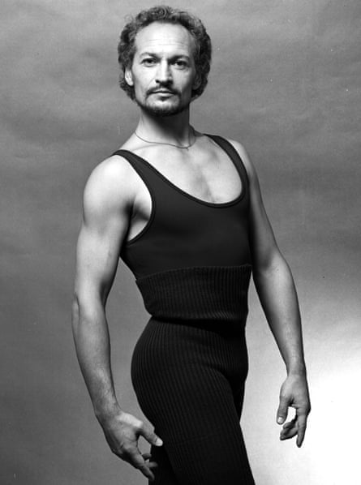
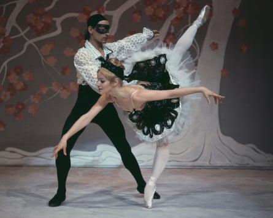

The virtuoso ballet dancer Valery Panov, who has died aged 87, became a cause célèbre in 1972 when, with his second wife, the ballerina Galina Ragozina, he applied for, and was refused, exit visas to leave the Soviet Union for Israel. It was fortunate that his dancing in the 1960s had attracted the attention of western balletomanes and critics, most notably Clive Barnes , who campaigned on his behalf for two years. Panov’s supporters in the west began an international campaign involving a who’s who of British and American theatre, including Laurence Olivier , John Cranko and Hal Prince , as well as the British prime minister Harold Wilson .
They were successful and brought about the dancers’ release in 1974. The harrowing details of being ostracised for two years, forbidden access to a studio in which to train and being imprisoned for vagrancy at the time of President Richard Nixon’s visit to the Soviet Union are recorded in Panov’s autobiography To Dance, written with George Feifer (1978). When their exit visas were finally agreed and they had to leave within five days, Panov was recovering from having been administered poisoned tea on a train, while Galina was suffering from a miscarriage.
Panov was a talented demi-character dancer more suited to dramatic roles than the traditional princes of classical ballet.Photograph: Jack Mitchell/Getty Images
Panov was a talented demi-character dancer more suited to dramatic roles than the traditional princes of classical ballet, indeed, he described himself as “an actor in dance”. Always a rebel, seen as a “risk” for defection, only once, in 1959, was he permitted to tour to the west. In the US he danced the then little-known pas de deux from Le Corsaire and The Flames of Paris.
Between 1957 and 1964 Panov danced with the Maly Ballet , the second company in Leningrad, where he benefited from coaching by Semyon Kaplan. Important for Panov was the title role in a new version of Igor Stravinsky’s Petrushka staged by Konstantin Boyarsky. Panov was not the downtrodden puppet created by the original choreographer Michel Fokine, but one who heroically protested his fate. The seal of approval for his performance came when Stravinsky saw it on his first return to his homeland in 50 years and admired its emotional impact.
Questions about Panov’s interpretation recurred when he performed this role in 1975 within Fokine’s original staging with London Festival Ballet, whose audiences were familiar with the more traditional version, but the critic John Percival noted that while Panov’s changes may have been disrespectful to Fokine’s production “they brought the character to life, finding again the passion and pain [the original Petrushka] Nijinsky must have found in it”.
Following Rudolf Nureyev’s defection in 1961 , Panov was invited in 1963 to dance Basil in Don Quixote at the Kirov and went on to replace him in many roles. Panov remained with the Kirov, where, in 1969 he received the Lenin prize and in 1970, after creating the title role in Sergeyev’s Hamlet, the title of Honoured Artist of the Russian Federation. His final creation at the Kirov in 1971 was the Devil in The Creation of the World, in which he danced alongside Yuri Soloviev and Mikhail Baryshnikov .
In 1967 Barnes saw Panov perform in Leningrad. He impressed him “as one of the most remarkable male dancers of our day … His dance technique is fantastic, but it is his sense of dramatic conviction that truly impresses.”
Born in Vitebsk, he was the son of Matvey Shulman, a manager of state-run leather goods production who was an ardent communist, always toeing the party line, and Elizaveta Charitonova, who encouraged his desire to dance. (Valery took the name Panov when he married the Maly dancer Liya Panova in 1958, having been encouraged to hide his Jewish surname.)
Panov and Ragozina dance the Harlequinade at the London Coliseum in 1975.Photograph: Keystone/Getty Images
He grew up in Vilnius, where he trained with a favourite pupil of the renowned ballet teacher Agrippina Vaganova. This led her to take an interest in him when he auditioned for her Vaganova School in Leningrad, and he was accepted. There, Nureyev was his contemporary and a similar “rebel”.
After leaving the Soviet Union, Panov continued to dance. Many early performances were in large arenas, but in Britain Beryl Grey snapped him and Galina up as guests for her company’s 1975 season at the London Coliseum. However his repertory and performances, Petrushka, an extract from Boyarsky’s The Lady and the Hooligan, his own adaptation of Harlequinade, and his Albrecht, presented as a preening cad quite out of sync with Mary Skeaping’s production of Giselle , disappointed audiences.
Panov had begun to choreograph in Vilnius and it quickly became his focus in the west. While ostracised he had written to Barnes about his desire to choreograph great works of Russian literature. After choreographing Heart of the Mountain for San Francisco Ballet (1976), in which he also danced, he became guest choreographer and a principal dancer at Berlin Opera Ballet (1977–83). There he choreographed Cinderella, with himself as the Prince (1977), War and Peace (1980) and Ricardo W (1983). But his most significant creation for the Berlin Ballet, seen also in New York, was The Idiot (1979), in which Panov danced as Rogozhin to Nureyev ’s Prince Myshkin, and which received a 40-minute curtain call.
Other significant choreography included Le Sacre du Printemps for Vienna, The Three Sisters initially for the Royal Swedish Ballet, and Romeo and Juliet for the Royal Ballet of Flanders, of which he was artistic director 1984-86.
In 1991 he became ballet director of Bonn Ballet, taking the company to Moscow the following year. From 1993 he focused on the Ashdod Performing Arts Centre in Israel, where in 1998 he founded the Panov Ballet Theatre. Relatively little of his work was seen in the UK, although in 2020 Birmingham Royal Ballet’s Brandon Lawrence was acclaimed in Panov’s 1998 solo, Liebestod.
His marriage to Liya had ended in divorce, as did his and Galina’s in 1993. In 1998 he married Ilana Yellin, an Israeli dancer. She died by suicide in 2009.
His son with Liya died in 1998. He is survived by two sons – one from his second marriage and another from his third – and a daughter from another relationship.